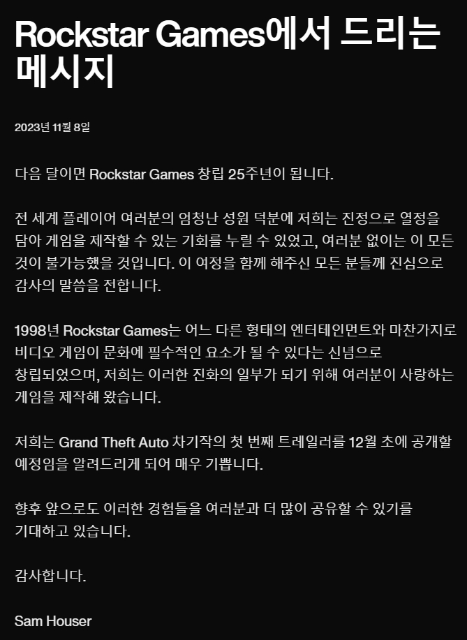

Why upgrade CPU?
Rockstars Games에서 출시하는 Grand Theft Auto Series의 15번째 작품 Grand Theft Auto Ⅵ가
출시일에 대하여 공식 언급이
있었기
때문이다.
아래는 Rocstar Games 공식 성명문이다.
아래는 Rocstar Games 공식 성명문이다.

GTA6
Recommended Specs
요구 사양이 매우 높을 것이라는 추측이 있으나,
사양 조절을 위한 최적화 단계는 게임 개발 막바지까지 진행되기 때문에 대략적인 사양 정보이다.
- Memory: 16 GB.
- Graphics Card: NVIDIA GeForce RTX 2070.
- CPU: Intel Core i7-8700K.
- File Size: 150 GB.
- OS: up to Windows 11.